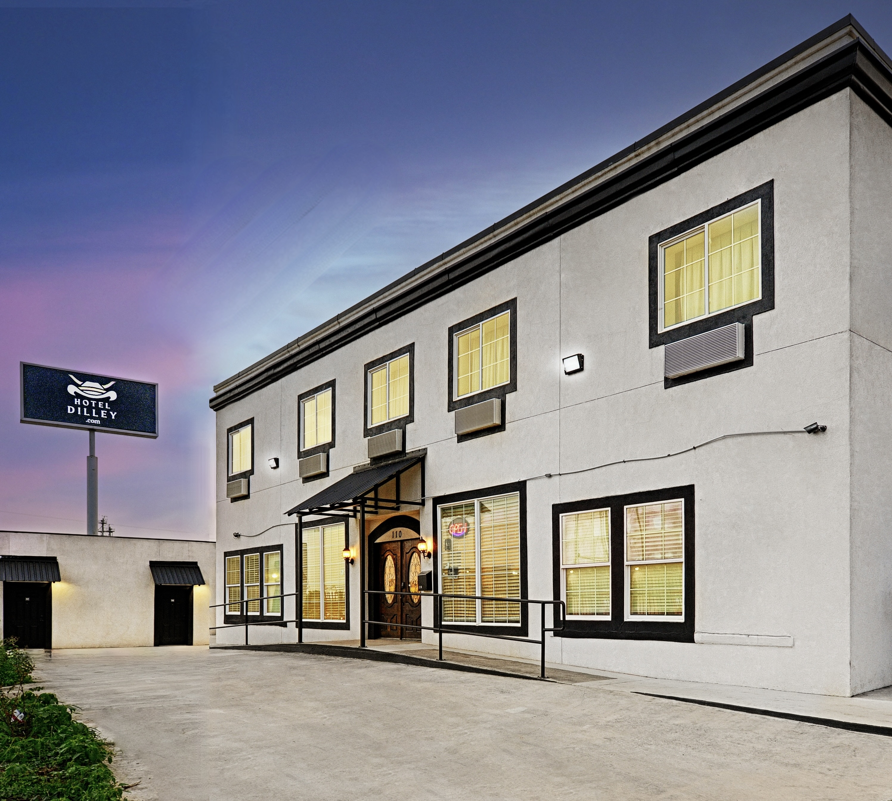

Furnished Setup
Renovated furnished rooms are available, helping reduce the setup burden for short or longer stays.
If you need a simple furnished place in Dilley, Hotel Dilley is a practical option to check. Renovated furnished rooms are available, with flexible nightly and longer-stay options.
What To Check
The best choice depends on how long you plan to stay, whether you need kitchenette access, and how much local support you want while you are in Dilley.
Renovated furnished rooms are available, helping reduce the setup burden for short or longer stays.
Hotel Dilley offers flexible nightly and longer-stay options, useful when a trip length is not fixed.
Some rooms include kitchenette facilities. Ask directly about kitchenette fit before making plans.
Practical Tradeoffs
Hotel Dilley is positioned for people who need furnished lodging in Dilley and want a straightforward conversation before choosing a room.



Questions To Ask
No. Some rooms include kitchenette facilities. Ask which room type is available for your stay.
Flexible nightly and longer-stay options are offered. Contact Hotel Dilley to discuss fit.
The property has an on-site manager.
Call to discuss room type, kitchenette needs, and flexible stay options. No public pricing or availability is listed here.